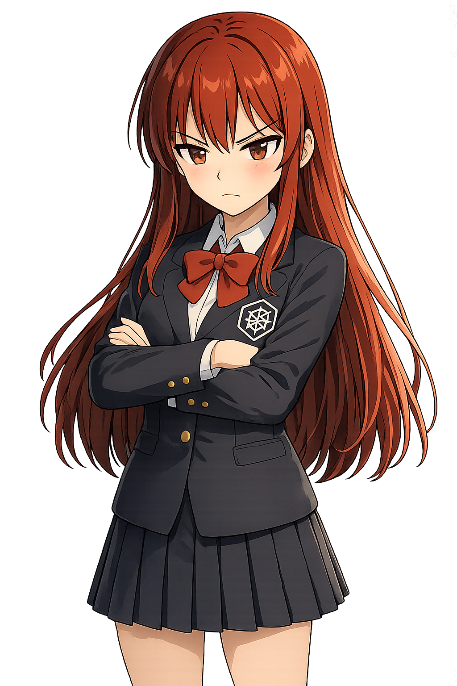

Surface workload failures early
Continuously identifies common Kubernetes failure modes and groups related symptoms around the affected workload.
Kubernetes incident intelligence
KubeChan detects broken workloads, assembles traceable operational evidence, and produces a reviewable assessment for the people on call. It remains advisory: your workloads stay under your control.

Operational value
KubeChan gives platform teams a shared incident record instead of another stream of disconnected alerts. The result is faster triage, clearer handoffs, and an evidence trail that can be reviewed after the pressure is gone.
Continuously identifies common Kubernetes failure modes and groups related symptoms around the affected workload.
Brings resource state, events, logs, configuration dependencies, and topology into a single operational workspace.
Connects conclusions and recommended next steps to the evidence available for that exact investigation.
Immutable diagnostic runs make it easier for teams to share findings, compare investigations, and learn from incidents.
KubeChan proposes remediation; it does not apply it. Approval and execution remain with your operational process.
Scoped exclusion rules help suppress known conditions by resource, detector, labels, namespace, or maintenance window.
Trust model
KubeChan separates observed cluster facts from interpretation. That boundary matters when an incident assessment influences production decisions.
Kubernetes state, events, and logs form the evidence snapshot.
Resources and relationships are organized deterministically for the investigation.
The model interprets supplied context but cannot create authoritative evidence.
References are checked against the same immutable snapshot before display.
Controllers manage KubeChan-owned state; user workloads are never changed as part of diagnosis.
Broken topology, healthy relationships, and possible corrections retain distinct semantics.
Completed DiagnosticRuns remain immutable so later collection changes do not rewrite history.
Operators can move from an assessment back to the source metadata, event, or log record behind it.
Where it fits
KubeChan complements monitoring and alerting. It focuses on turning a detected problem into structured context that a human operator can act on.
Platform teams
Give engineers a consistent starting point across CrashLoopBackOff, image pulls, unavailable deployments, pending pods, and services without endpoints.
On-call engineers
Move between the incident, topology, cited sources, alternative hypotheses, missing evidence, and an ordered remediation runbook.
Engineering leaders
Use Kubernetes-native incident objects and immutable diagnostic snapshots to improve handoffs and post-incident review.
Application teams
Start a manual investigation from a root resource and attach related resources when automatic detection is not the right entry point.
Run KubeChan
Deploy the Helm chart, configure an analysis provider, and open the incident workspace. The documentation includes the quick start and CRD reference.